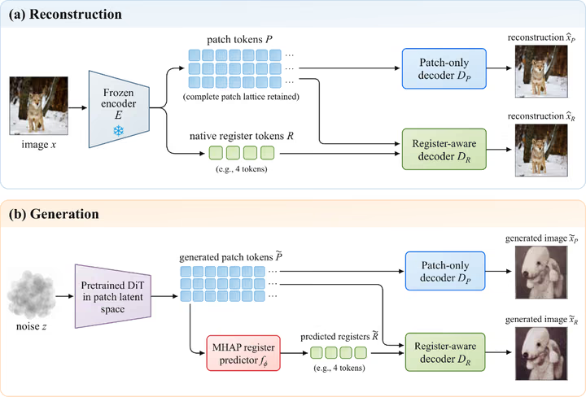

Decoding Register Tokens Preserves Global Scene Details
PreprintCurrently under review

We study what is lost when image decoders use only patch tokens. Retaining four register tokens alongside all spatial patches improves reconstruction from frozen DINOv2 and DINOv3 representations. For generation, a lightweight MHAP module recovers register features from sampled patches and improves image quality without retraining the diffusion model.
Paper
Code
BibTeX for Decoding Register Tokens Preserves Global Scene Details
@misc{drexlin2026registers,
title = {Decoding Register Tokens Preserves Global Scene Details},
author = {Drexlin, David Jacob and Hense, Julius and Dippel, Jonas},
year = {2026},
eprint = {2610.13299},
archivePrefix = {arXiv},
url = {https://arxiv.org/abs/2610.13299}
}